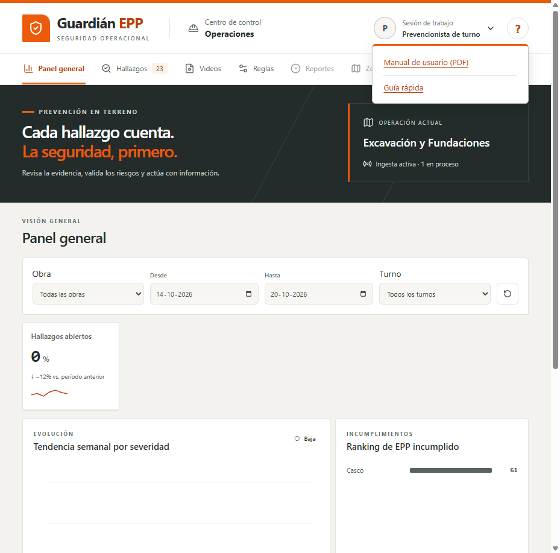
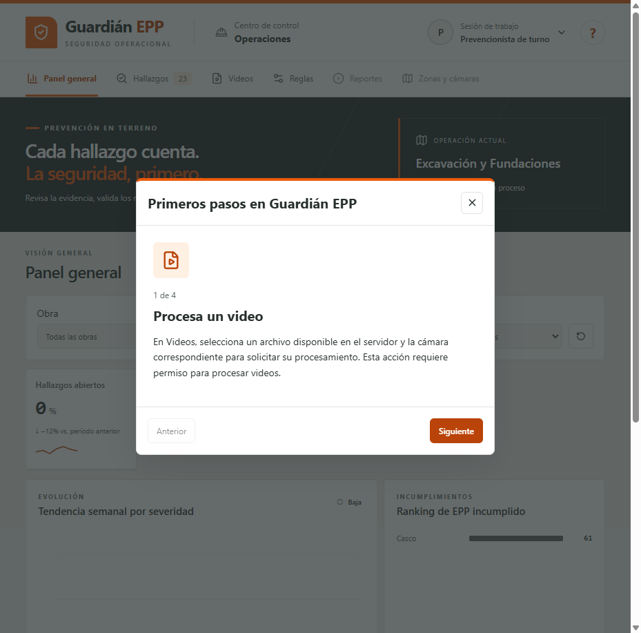
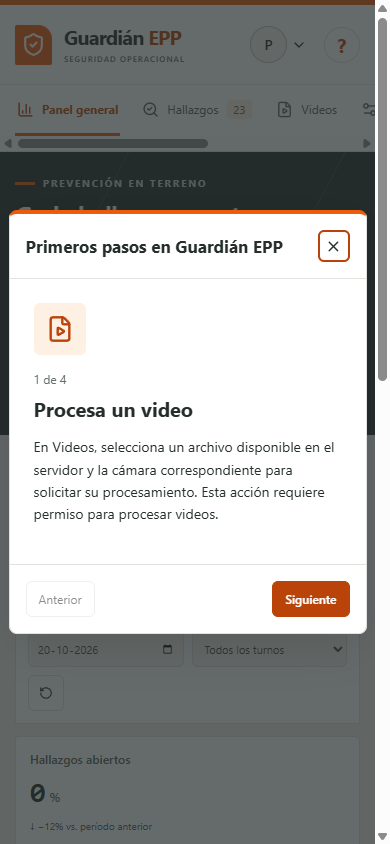

Prueba final en Windows: Ayuda global
20 de octubre de 2026 · America/Santiago · main en 71bd454 (#196 fusionado). Windows, ventana de navegador local y mock Prism del contrato en 127.0.0.1:4010; esta prueba verifica la interfaz contra el mock, no el backend real.
Resultado
El botón «?» abrió Ayuda con Manual de usuario (PDF) y Guía rápida. La guía abrió en 1 de 4 y mantuvo el foco inicial en Cerrar. En Panel general, pulsar c y x con la Guía abierta no alteró la interfaz. El caso que sí tiene triage —Hallazgos con visor abierto y Guía— se comprueba en App.test.tsx dentro de la suite completa. En 390 × 844, el diálogo se mantuvo visible y Escape lo cerró devolviendo el foco a Ayuda.
La consola registró dos errores 404 de favicon.ico; no impidieron el recorrido.

Ayuda en escritorio. El botón «?» muestra el enlace PDF y Guía rápida, sin el separador heredado del menú de sesión. Estado: pasó.

Guía en escritorio. Abre la primera de cuatro tarjetas; Cerrar recibe el foco. Después de pulsar c/x en Panel general, la guía siguió abierta. El triage en Hallazgos se cubre con App.test.tsx. Estado: pasó.

Guía en ventana estrecha. La primera tarjeta y los controles quedaron visibles en 390 × 844. Tab se mantuvo en el diálogo y Escape lo cerró devolviendo el foco a Ayuda. Estado: pasó.